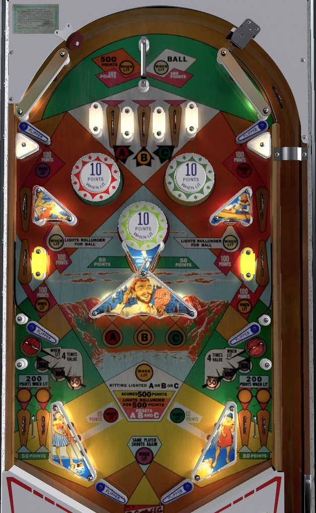

The A-B-C letters, which govern most scoring features in the game, have their status carry over across players, balls, and games, making concise strategies difficult and making Paul Bunyan a poor game for competition. In general, keep the ball in control of the middle and upper flippers as much as possible while also trying to collect A-B-C in order. The lower saucers and standup targets are too dangerous to make a strategy around them. When all of A-B-C are lit, most features in the game award up to 100 points, but you can hit the roving A-B-C light to score 500 points, reset the letters, and light the top rollunder for another 500.
The A-B-C letters are a scoring feature that carries over across players and games. The status of A-B-C progression drastically changes the value of most scoring features. To progress the sequence, collect A-B-C in order, then recollect whichever letter is lit- in part 2, every 1-point switch hit changes which letter is lit. A-B-C letters can be collected from top lanes or the center red, yellow, and green standup targets. Any A-B-C lane or target scores 50 points.
When A is lit: the left pop bumper, and left slingshot are lit for 10 points, and the upper right side lane is lit for 100 points.
When B is lit: the center pop bumper is lit for 10 points, and the middle left and right side lanes are lit for 100 points.
When C is lit: the right pop bumper and right slingshot are lit for 10 points, and the upper left side lane is lit for 100 points. Also, since A-B-C has been completed, the rollunder switch at the very top of the game is lit for 500 points instead of 100 (stays on until collected), the two lower saucers, are lit alternately for 4x scoring, and the bullseye standup targets in the middle playfield are lit alternately to qualify an extra ball at the top rollunder. At this point, one of A-B-C are lit at a time, alternating with 1-point switch hits; hitting the lit A-B-C letter scores 500 points and resets the A-B-C sequence.
The swinging rollunder gate at the top of the playfield has a default value of 100 points. When the initial A-B-C sequence is completed in order, the top rollunder will be lit for 500 points; this stays on until collected. Also, completing A-B-C lights one of the bullseye targets near the middle flippers for "Lights Rollunder for Ball". Bullseye targets are lit alternately based on 1-point switch hits. If you hit a lit bullseye target, the top rollunder will be lit for extra ball until it is collected. However, if you re-collect the rotating A-B-C letter to reset the A-B-C sequence first before lighting the top rollover for extra ball, you've missed your chance- the bullseye targets unlight as part of the reset sequence, and you need to complete A-B-C again to have another chance at the extra ball.
The lower left and right saucer score 50, 100, or 150 points. The exact value rotates based on 10-point switch hits. When A-B-C has been completed in order but the sequence has NOT been reset yet, one of the two saucers will be lit for 4x value, meaning it can score 200, 400, or 600 points. Which saucer is lit alternates based on 1-point switch hits. The middle flippers and the large posts that flank these saucers make them too difficuly and dangerous to shoot for.
There are no in lanes. Flippers back up directly to the slingshots. Two inch mini flippers are used. Slingshots score 1 point, or 10 when lit by collecting the A (left) or C (right) letters in proper sequence. The out lane area is very wide, and there are 2 out lanes on each side: at any given time, one out lane in each pair scores 50 points, and the other one is lit for 200 points, again alternating based on 1-point switch hits.
There is no end of ball bonus. Tilt ends the current ball in play only, Paul Bunyan has a maximum of 1 extra ball per ball in play, while the add-a-ball version Big Jack allows a player to have up to 5 extra balls remaining at any given time.